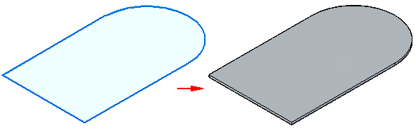
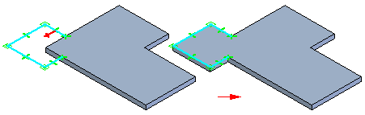
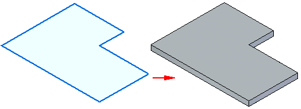
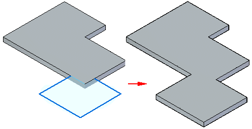

Tab command
Use the Tab command  to construct a tab feature on a sheet metal part. You can use this command to construct
a base feature or add a feature to an existing sheet metal part.
to construct a tab feature on a sheet metal part. You can use this command to construct
a base feature or add a feature to an existing sheet metal part.
You can construct a tab with a single sketch region,

or with multiple sketch regions.

Creating tabs in the ordered environment
When constructing tabs by selecting multiple sketch regions, the regions must be in the same plane. When constructing a base feature in the ordered environment, the region must be closed, and you must define the material direction and thickness.

For subsequent features in the ordered environment, the region can be open or closed. When using an open region, you must define the side of the profile to which you want to add material.

Creating tabs in the synchronous environment
When constructing a base feature in the synchronous environment, the sketch region must be closed, and you must define the material direction and thickness.

For subsequent features in the synchronous environment, the sketch can be open or closed. If the sketch is open, the edge of the tab must close the sketch to form a sketch region. Subsequent features are automatically added when you select the extrude handle.

Editing tabs
After you create a tab, you cannot change the thickness or offset direction for the tab. You can use the Material Table to change things such as global thickness, bend relief, and relief depth.
How do I
Construct a tabConstruct a sheet metal base feature
Construct a lofted flange
Learn more
Construct the base featureLook up more details
Tab command barLofted Flange command
Lofted Flange command bar
Lofted Flange Options dialog box
General tab (Lofted Flange)
Bending Method page
Vertex Mapping dialog box